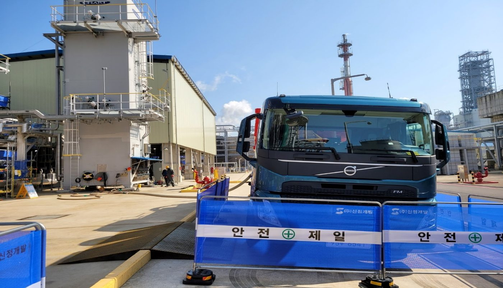
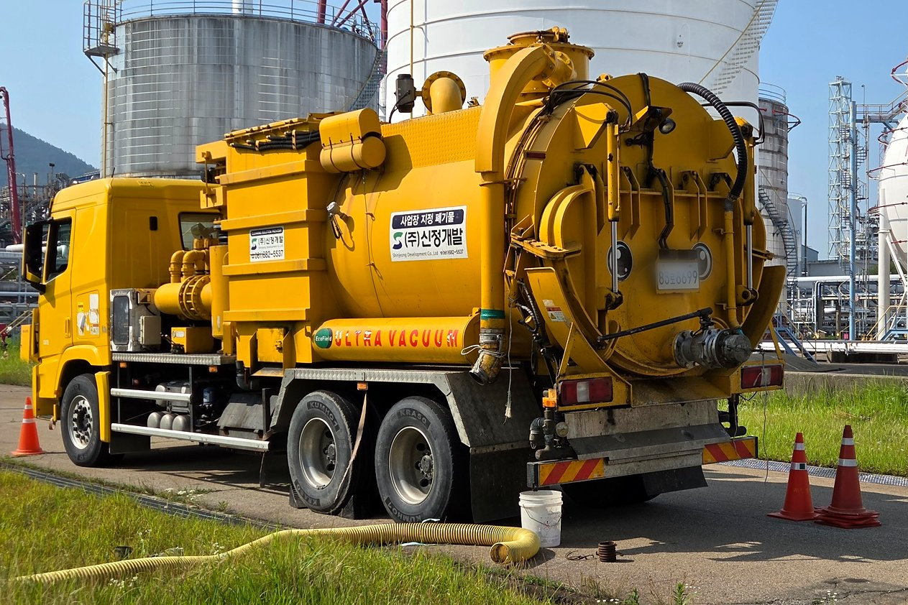
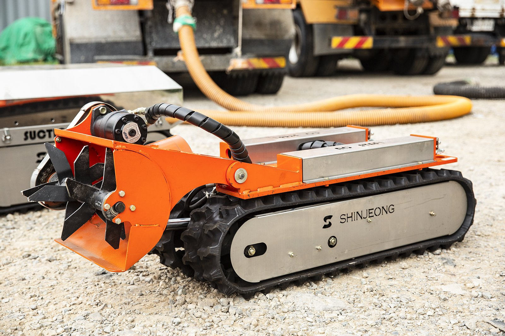
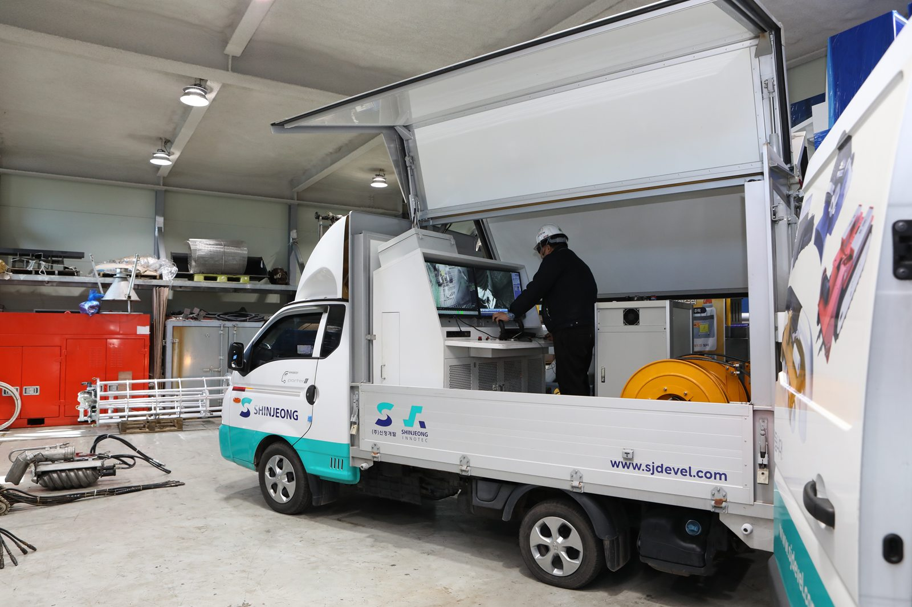
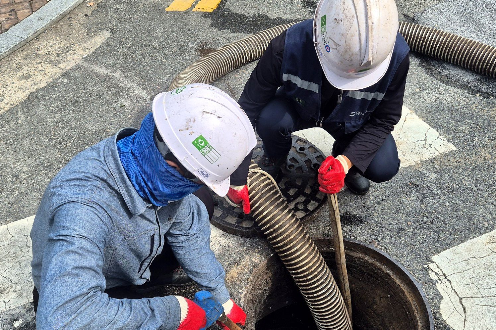
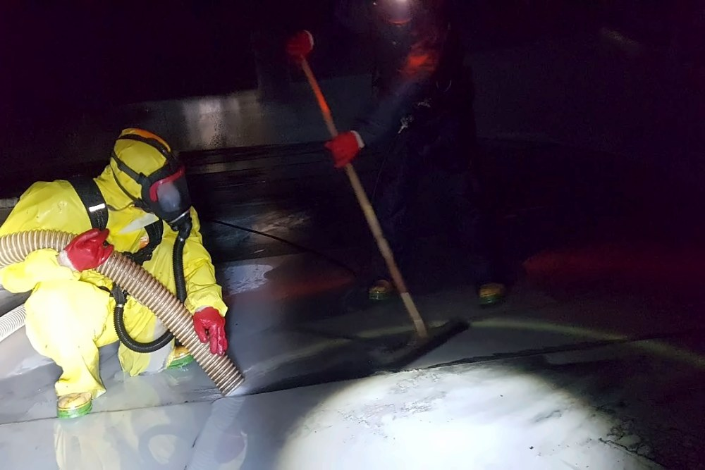
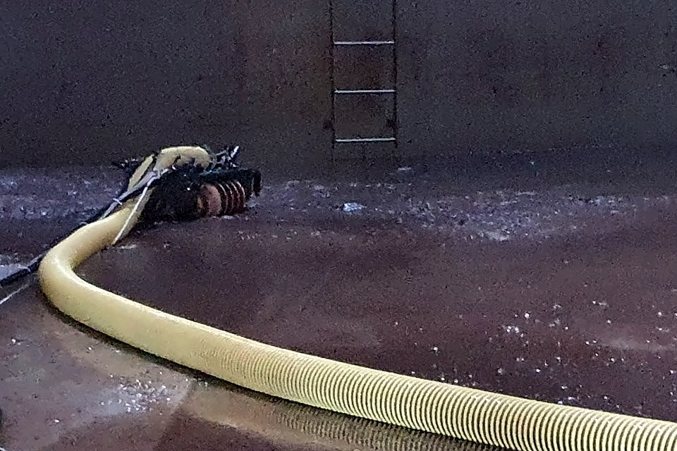

STEP 01
현장 검토·사전 시험(Test)
현장 적용 가능성을 검토하고 사전 시험을 실시합니다. 출입구·내부 구조·잔류물 성상·온도를 확인합니다.
작업은 현장 검토에서 시작해 회수물 처리로 끝납니다. 위험한 구간에는 로봇이 먼저 들어가고, 작업자는 위험 물질이 줄어든 뒤에 투입됩니다.

현장 적용 가능성을 검토하고 사전 시험을 실시합니다. 출입구·내부 구조·잔류물 성상·온도를 확인합니다.

제어 차량과 흡입차를 배치하고 로봇을 호스로 연결합니다. CCTV와 원격 조정 장치를 설치합니다.

흡입차(Vacuum Car)를 이용해 설비 외부에서 잔여 물질을 먼저 제거합니다.

로봇을 투입해 내부 잔여 위험 물질을 1차 회수하고, 전면부 Jet Nozzle로 내부를 세척합니다(2차 세척).

작업자는 설비 밖 제어 차량에서 CCTV로 내부를 보며 로봇을 조종합니다.

위험 물질이 줄어든 뒤 작업자가 투입되어 내부 최종 잔여물을 제거합니다.
회수물은 데칸타·필터프레스로 탈수해 폐기물량을 줄이고 처리 기간을 단축합니다.
위험한 작업은 로봇이 먼저 하고, 작업자는 설비 밖에서 조종합니다.
그림을 표시할 수 없습니다. 아래 설명을 참고해 주세요.
옆으로 밀어서 볼 수 있습니다.
작업자는 설비 밖 제어 차량에서 CCTV로 내부를 보며 로봇을 조종합니다.
작업자가 CCTV로 내부를 보며 로봇을 조종합니다.
잔여 위험 물질을 회수하고, 전면부 Jet Nozzle로 내부를 세척합니다.
호스로 연결해 회수물을 흡입합니다.
촉매·충진물 작업에서 회수물을 분리합니다.
실제 배치는 현장 조건에 맞춰 정합니다. 그림은 이해를 돕기 위해 단순화한 것입니다.

신정개발의 무인 로봇 시스템은 밀폐공간 작업의 위험을 줄이기 위해 개발했습니다.
고용노동부 산업재해조사 (2014~2023)
신정개발 연간 작업 기준
작업자가 설비 안에 들어가면 아래 다섯 가지 위험에 노출됩니다. 로봇을 먼저 투입하면 이 위험을 피할 수 있습니다.


| 주요 위험성 | 로봇을 먼저 투입하면 |
|---|---|
| 유독가스에 의한 질식 | 위험물질 사전 제거 |
| 고위험 물질 접촉 | 위험물질 사전 제거 |
| 공기 공급 중단에 의한 질식 | 작업자 안전 확보 |
| 줄 걸림에 의한 넘어짐 | 내부 작업시간 최소화 |
| 협소 공간에 따른 근골격 부상 | 협소공간 대체 투입 |
로봇이 모든 작업을 대신하지는 않습니다. 위험 물질이 줄어든 뒤 최종 클리닝은 작업자가 합니다.
| 주요 효율성 | 인원 투입 작업 | 로봇 투입 작업 | 비고 |
|---|---|---|---|
| 일반 작업 허가서로 진행 | 제한 | 가능 | 준비시간 감소 |
| 1시간 이상 연속 작업 | 제한 | 가능 | 유효 작업시간 확보 |
| Jet · 흡입 동시 작업 | 제한 | 가능 | 작업 효율 증가 |
| CCTV 내부 감시 | 제한 | 가능 | 실시간 내부 확인 |
| 위험구역(방폭·가스) 긴급 작업 | 제한 | 가능 | 위험지역 내 즉시 투입 |
무인 장비를 적용하는 대표 용도 네 가지의 적용 범위와 장점, 유의점입니다.
데칸타(원심분리)·필터프레스(여과·압착)로 탈수해 폐기물 처리량·비용·시간을 줄입니다.
원심분리를 이용한 고액분리
여과·압착을 이용한 탈수
처리량·함수율 등 사양은 대상 물질의 응집 상태에 따라 달라지므로 상담 시 안내합니다.
출처: (주)신정개발 회사소개서(2024) · 기술소개서(2025)